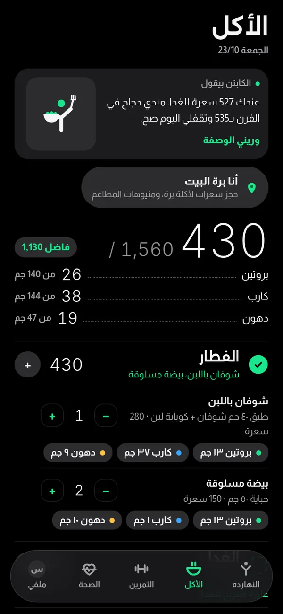
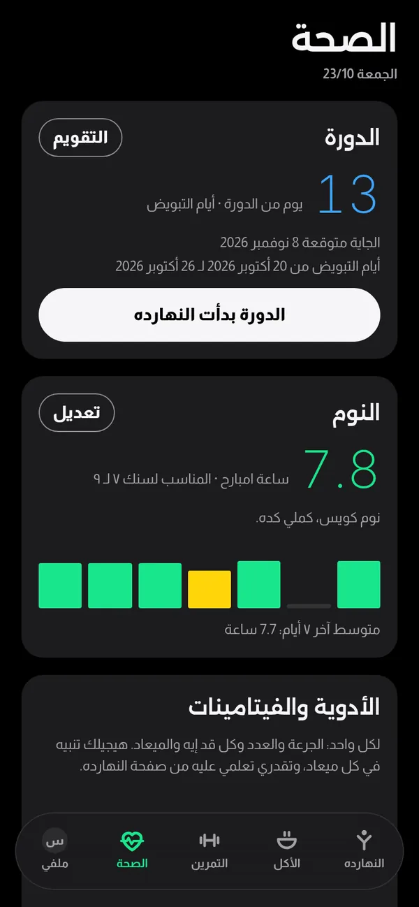
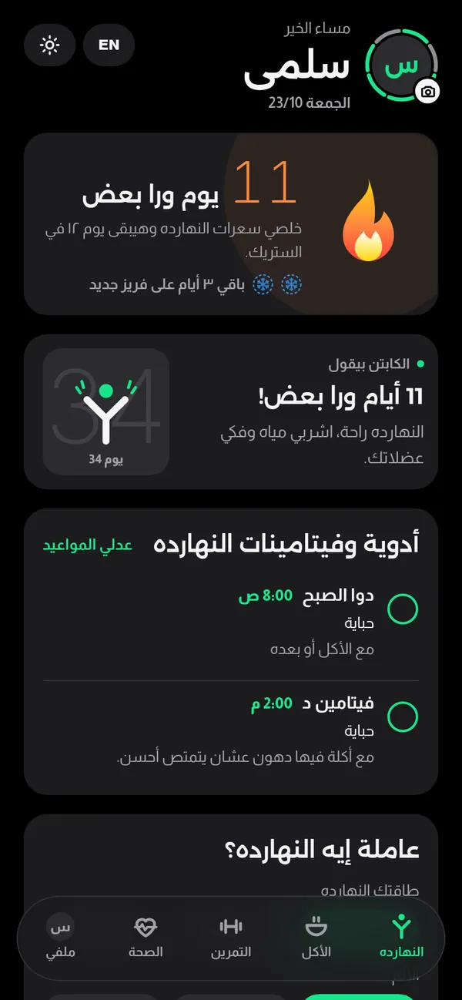

8:30الصبح · المطبخ
الفطار محسوب قبل ما يتاكل.
اقتراح فطار على قد السعرات اللي فاضلة، وكل أكلة بوزنها والبروتين والكارب والدهون. والوجبة بتدخل الحساب لما يتحط عليها علامة صح.
Be well. Live more.
يلا ويل بيعملك خطة أكل وتمرين على حسب جسمك وهدفك وصحتك، وبنعدلها كل ما حياتك تتغير. أكل متنوع، وتمرين بجد، وأيام راحة، من غير قواعد صعبة ولا ملل.
قريبا على آيفون وأندرويد
يومك معانا
من الفطار لحد النوم، التطبيق ماشي جنبك في كل محطة.

8:30الصبح · المطبخ
اقتراح فطار على قد السعرات اللي فاضلة، وكل أكلة بوزنها والبروتين والكارب والدهون. والوجبة بتدخل الحساب لما يتحط عليها علامة صح.

10:00الصبح · المعمل
نتيجة كل تحليل بتتسجل بتاريخها، والتطبيق بيفكر بميعاد التحليل الجاي، وبيطلع تقرير يقارن النتايج ببعض.

1:30الضهر · برة البيت
اختيار المطعم والأكل اللي هيتطلب، والسعرات بتتحجز للوجبة دي، وباقي اليوم بيتظبط عليها.

7:30بالليل · الجيم
جيم أو بيت، والمجموعات والعدات والراحة لكل تمرين. والوزن المقترح بيزيد لما العدات تكمل.

11:00بالليل · النوم
ميعاد النوم والصحيان وعدد الساعات على مدار الأسبوع. والساعة ١٢ اليوم بيتقفل ويدخل في تقرير الأسبوع.
Be well. Live more.
كل محطة ليها شاشتها، وكلهم عارفين بعض.
قبل وبعد
تطبيق لكل حاجة، وورق في الدرج
الأكل عارف التمرين، والتمرين عارف النوم والأدوية

خطة على مقاسك
كام سؤال بسيط، والخطة بتتغير مع كل إجابة. الأرقام هنا مثال، والحقيقية بتطلع من سنك وطولك ووزنك ونشاطك.
الهدف
أيام التمرين في الأسبوع
التمرين فين
صحتك
خطتك
مثالبالأرقام
دقة السعرات
سعرة أقل من الحقيقة في الوجبة الواحدة، في اختبار لـ4 تطبيقات تصوير معروفة
أرقام الأكل في يلا ويل محسوبة بالجرام من قاعدة بيانات الأكل الأمريكية
تطبيقات التصوير بتخمن الكمية من الصورة، وكتير بتغلط. إحنا بنحسب أكلك بالجرام من قاعدة بيانات موثوقة.
كل أكلة محسوبة بوزنها من أرقام وزارة الزراعة الأمريكية (USDA FoodData Central)، والمنتجات المغلفة من ملصقها بقراءة الباركود (Open Food Facts).
المصدر: باحثين في المعاهد الوطنية للصحة الأمريكية (NIH) اختبروا 102 وجبة، وعرضوا النتائج في مؤتمر NUTRITION 2026، والدراسة لسه مش منشورة في مجلة محكمة. الخبر
البداية
العمر والطول والوزن والهدف، وأي حالة صحية أو أدوية أو حساسية من أكل، ولو فيه نظام أكل من أخصائي تغذية.
9 أنظمة، أو 3 أسئلة ونقترح بعدها نظام مناسب. وكل يوم في الأسبوع يا جيم يا بيت يا راحة.
السعرات والبروتين والمية وأسبوع التمرين، مع ملاحظة على كل حاجة اتغيرت بسبب حالتك الصحية.
من غير قائمة ممنوعات. الخطة بتتغير كل ما ظروفك تتغير، علشان الأكل الصحي والحركة يبقوا جزء من يومك العادي، ويكملوا كمان بعد الوصول للهدف.
Be well. Live more.
التطبيق جاي قريب على آيفون وأندرويد.
الأسئلة
تطبيق بيعملك خطة أكل وتمرين على حسب جسمك وهدفك وصحتك، وبيفكرك بمواعيد الأدوية والتحاليل. ولو صحتك أو أدويتك اتغيرت، الخطة بتتغير معاها.
لا. يلا ويل بيساعد في التنظيم والمتابعة، ومش بيشخص. والقرار في الدواء أو الأكل أو التمرين بيكون مع الدكتور.
كل أكلة محسوبة بوزنها بالجرام من قاعدة بيانات وزارة الزراعة الأمريكية للأغذية (USDA FoodData Central). والمنتجات المغلفة بتتحسب من ملصقها بقراءة الباركود (Open Food Facts).
قريبا على آيفون وأندرويد. هنعلن على قناة الواتساب والسوشيال ميديا أول ما ينزل.
النسخة الحالية تجريبية ومن غير أي اشتراك.